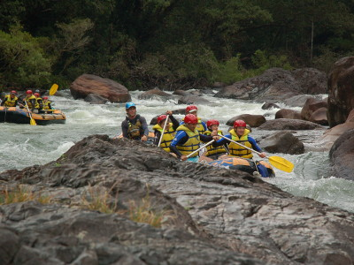

Vielleicht wundern Sie sich,
dass Sie an dieser Stelle kein Känguru, Wombat oder Koala begrüßt.
Sicher verbindet man Australien und insbesondere den Bundesstaat
Queensland oft mit diesen Tieren. Ich möchte Sie aber auf einer
Reise durch unseren sonnenreichen Staat begleiten, die Ihnen mehr
zeigt als Strände und das Great Barrier Riff. Aber natürlich soll
auch dabei Wasser schon eine wichtige Rolle spielen, z. B. im
Regenwald oder bei einer Rafting-Tour. Also bin ich sicher, meine
Heimat gut repräsentieren zu können.
Queensland wird wie schon erwähnt, sehr oft mit dem Graet Barrier
Riff in Verbindung gebracht. Das auch als siebentes Weltwunder
bezeichnete Riff erstreckt sich über ca. 2300 km entlang der
Ostküste Australien von Cape York im Norden bis hinunter nach
Bundaberg. Einmal ans Great Barrier Riff, ein typischer Wunsch für
viele Besucher, die zum ersten oder zweiten Mal meine Heimat
besuchen. Natürlich ist es faszinierend, am Riff zu tauchen oder zu
schnorcheln. Queensland bietet aber noch viele weitere interessante
Möglichkeiten, seinen Aufenthalt interessant und abwechslungsreich
zu gestalten. Ein paar Anregungen möchte ich Ihnen nachfolgend
geben.
Begleiten Sie mich also auf eine kurze Reise zu folgenden
Stationen:
Magnetic Island und Townsville
Starten werden wir unsere kleine Tour
auf Magnetic Island. Die zum Weltnaturerbe gehörende Insel liegt
rund 8 km vor der Stadt Townsville und ist in etwa 25 Minuten mit
der Katamaranfähre zu erreichen. Magnetic Island erhielt seinen
Namen im Jahr 1770 von James Cook als er annahm, der Magnetkompass
seines Schiffes "Endeavour" werde von der Granit-Landmasse
beeinflusst. Zwar sind die Granitfeslen nicht magnetisch. Aber
seit über hundert Jahren finden immer mehr Menschen Gefallen an
der Landschaft und den Küsten der Insel. Mehr als die Hälfte
Magnetic Islands ist Nationalpark und "Maggie", wie die Insel bei
den Einheimischen genannt wird, ist die Heimat der gößten
freilebenden Koala-Population im nördlichen Teil Australiens. Mit
etwas Glück können Sie die Tiere hier bei einer Wanderung auf den
über 20 km langen Routen beobachten.
Magnetic Island
bietet dem Gast vom Backpacker-Hotel bis zum gut ausgestatteten
Hotel verschiedene Möglichkeiten zur Übernachtung.
Auf der Insel kann man die sogenannten Mini-Mokes mieten. Mit
diesem fahrbaren Untersatz versehen, lässt sich das Eiland sehr
gut erkunden. Zudem kommt auch der Fahrspaß nicht zu kurz. Einfach
die Fahrt genießen und dabei "Maggies" wunderbare Natur bestaunen.
Legen Sie einen Zwischenstop ein und erkunden Sie z. B. den
Forts-Walk hin zu alten Geschützstellungen. Von dort aus können
Sie einen wunderbaren Blick genießen.
Möchten Sie
einmal ein Frühstück mit Koalas erleben. Die Möglichkeit dazu
haben Sie im Bungalow Bay YHA. Lassen Sie sich von einem Ranger
mehr über die Tierwelt der Insel erzählen und probieren Sie das
Bush Tucker Breakfast. Besonders zu empfehlen ist ein Tee aus
grünen Ameisen, die natürlich auch gern roh probiert werden
dürfen.
Ein Erlebnis für jeden Touristen sind die Rock Wallabies,
die vor allem in den frühen Morgenstunden zwischen Felsen
auszumachen sind. Mit ein wenig Futter in der Tasche lassen sich
die kleinen Gesellen auch gern aus der Nähe betrachten.
Sollten Sie Magnetic Island besuchen, versäumen Sie es nicht,
auch dem Reef Headquarter in Townsville einen Besuch abzustatten.
Sie erfahren dort alles rund um das Great Barrier Reef und seine
Bewohner. Möglicherweise haben Sie sogar die Gelegenheit,
einen Blick in das Turtle Hospital zu werfen, in dem verletzte und
kranke Schildkröten gepflegt werden. Falls Sie planen, am Riff zu
tauchen, bietet das Reef HQ auch die Gelegenheit, sich dort auf
die Tauchgänge vorzubereiten.
Einige Eindrücke von Magnetic Island und Townsville habe ich für
Sie in der folgenden Fotogalerie zusammengestellt. Überzeugen sich
vom Flair der Region.
Karte Magnetic Island
Magnetic Island (1)
Magnetic Island (2)
Magnetic Island (3)
Fort Walk (1)
Fort Walk (2)
Am Fort
Ekidna
Fütterung
Koala
Mit Koala
Mini Mokes
Reef HQ
Schlange
Townsville - Strand
Hidden Valley
Begleiten Sie mich nun von Townsville in Richtung
Norden bis hinauf in den Rainforrest ins Hidden Valley. Doch bevor
wir dort ankommen, machen wir noch einen kleinen Zwischenstop im
Billabong
Sanctuary. Hier können Sie viel über die Tiere Australiens
erfahren und haben sicher auch die Gelegenheit einmal einen Koala
im Arm zu halten. Oder Sie lassen sich mit Tonga, dem Wombat
fotografieren. Dieser kleine Kerl liebt es, sich mit allen
möglichen Leuten ablichten zu lassen. Nur mag er es gar nicht,
wenn sich die Besucher irgendwann auch mit den anderen Bewohnern
befassen. Na und da gibt es so einige. Von Kängurus über
Schlangen, Krokodile bis hin zu den großen und nicht ganz
ungefährlichen Cassowaries. Also nutzen Sie die Gelegenheit und
besuchen Sie das Sanctuary. Ich bin mir sicher, Sie werden mit
vielen interessanten Eindrücken und bestimmt auch einer Menge an
neuen Informationen wieder abreisen.
Wir machen uns nun aber wirklich weiter auf den Weg nach Hidden
Valley. Denn die Unterkunft - die
Hidden
Valley Cabins - liegen etwa 1,5 Autostunden nordwestlich von
Townsville. Man sollte den Ort möglichst bei Tageslicht erreichen.
Denn der Name verspricht nicht zu viel und liegt wirklich etwas
versteckt.
Was erwartet Sie dort?
Zunächst einmal Natur pur. in der Abgeschiedenheit
des Hidden Valley finden Sie Ruhe und können den Tag bei einem
gemütlichen Barbecue ausklingen lassen. Sie haben natürlich auch
die Möglichkeit, z. B. auf eine Platypus-Safari zu gehen.
Vielleicht haben Sie Glück und können die sehr scheuen Tiere in
ihrem Lebensraum beobachten. Sollte der Tag noch nicht dafür
gesorgt haben, dass es Sie nach einem Nachtlager verlangt, bietet
die Herberge gern auch an, eine Nachtwanderung durch die nähere
Umgebung zu organisieren. Sie werden staunen, welche Bewohner des
Regenwaldes Ihnen dabei so über den Weg laufen. Anschließend
werden Sie sicher gut schlafen.
Tully
Hoffentlich gut ausgeruht möchte ich Sie nun
mitnehmen auf einen Trip zum Tully River. Hier soll es unter
fachkundiger Anleitung in einem Schlauchboot den Fluss hinunter
gehen. Ich bin sicher, dieses Erlebnis wird Ihnen lange in
Erinnerung bleiben. Gut ausgestattet und eingekleidet werden
zunächst in ruhigem Wasser die Ruderkommandos und die
Zusammenarbeit im Boot trainiert. Natürlich gibt es auch die
nötigen Einweisungen für das Verhalten, sollte man während des
Trips einmal über Bord gehen - was mit Sicherheit mindestens
einmal passieren wird.

Gut vorbereitet kann der Ritt den Fluss hinab
beginnen. Eine faszinierende Fahrt beginnt und man wird erstaunt
sein, mit wie viel Kraft sich die ganze Besatzung des Bootes den
Kräften des Wassers entgegenstemmen muss, um auf Kurs zu bleiben.
Anstrengend, aber für alle auch ein Riesenspaß. Zumal die
Guides immer einen lockeren Spruch parat haben und natürlich
jederzeit auch das Boot unter Kontrolle.
Die Reise auf dem wilden Fluss ist wie gesagt recht
anstrengend. Daher kommen ruhige Passagen doch einmal ganz
gelegen. Dabei kann man an den Ufern allerlei entdecken. Auch ein
kleiner Landgang zwischendurch ist angesagt. Vielleicht sehen Sie
dabei einige der vielen Bewohner, die die Flusslandschaft ihr zu
Hause nennen. Ganz berühmt natürlich der blaue Schmetterling
"Ullyssus". Nach der Landtour geht es weiter den Fluss hinab, gern
auch einmal ganz entspannt außerhalb des Bootes. Am Ende der Tour
sieht man tatsächlich nur zufriedene Teilnehmer. Die können dann,
wieder in trockener Wäsche, in der Basisstation in Tully ihre
Erlebnisse noch einmal bei einem gepflegten Bier Revue passieren
lassen.
Cairns
Cairns ist durch seine Lage das Tor zum Great
Barrier Reef. Wer vorhat, das Riff zu besuchen und dafür einen
möglichst kurzen Anfahrtsweg bevorzugt, muss unbedingt nach Cairns
kommen. Auch wenn die Tour mit schnellen Schiffen immer noch etwa
1,5 Stunden dauert, so hat man hier wirklich die kürzeste Strecke
von Land aus zu überbrücken.
Daneben bietet Cairns aber noch viel mehr für seine
Gäste. Schlendern Sie die Uferpromenade entlang und genießen Sie
die Sonne. Lädt das Meer auch zum Baden ein, sollten Sie das
lieber unterlassen. Jedenfalls wenn Sie keine Bekanntschaft mit
Krokodilen machen wollen. Als Ersatz ist an der Uferpromenade die
Cairns Lagoon geschaffen worden. Wer also eine Abkühlung benötigt,
findet Sie dort.
Natürlich lohnt es sich auch am Abend, die Promenade
zu besuchen. In einem der zahlreichen Restaurants und
Pubs findet sich sicher ein Plätzchen nach Ihrem Geschmack. Wer
darüber hinaus die Nacht zum Tag machen will, dem sei das
Gilligans
empfohlen. In diesem Backpacker-Hotel gilt die sonst übliche
Sperrstunde nicht und es kann bis in den Morgen gefeiert werden.
Noch eine Empfehlung für Freunde des guten Essens. Wer
balinesische Küche mag, der ist im
Bay
Village Tropical Retreat genau richtig. Hier bereiten
balinesische Köche für Sie ein wirklich hervorragendes Essen zu.
Ein Aufenthalt in Cairns sollte nicht ohne einen
Besuch in Kurranda enden. Starten Sie unweit der Stadt an der
Freshwater Station mit einer Zugfahrt in historischen Waggons.
Genießen Sie unterwegs den Ausblick auf die Landschaft und
schießen Sie bei einem Zwischenstop Erinnerungsfotos. Nach etwa
1,5 Stunden erreichen Sie Kurranda.
In Kurranda können Sie in vielen kleinen und
größeren Shops aboriginal Art erweben. Darüber hinaus haben Sie
hier die Gelegenheit ein Butterfly Santuary zu besuchen. Bestaunen
Sie die farbenfrohen Schmetterlinge und lassen Sie sich bei einer
Führung mehr über deren Lebensweise erklären.
Wollen Sie noch ein wenig mehr Abenteuer und dazu
etwas über den Regenwald erfahren? Dann empfehle ich Ihnen die
Tour mit dem Army Duck. Es geht mit diesem Amphibienfahrzeug aus
den Zeiten des 2. Weltkriegs durch den dichten Regenwald - zu Land
und auf dem Wasser. Dabei lernen Sie viel über die Flora und Fauna
und entdecken vielleicht den einen oder anderen Bewohner des
Regenwalds.
Vollgepackt mit Eindrücken und neuem Wissen können Sie sich ganz
entspannt in der Seilbahn, die von Kurranda über das grüne Dach
des Regenwaldes wieder zu Tal führt, auf den Heimweg begeben.
Damit sind wir am Ende unser Reise durch einen kleinen Teil
Queenslands. Ich hoffe, es war ein interessanter Trip für Sie. Ja und
natürlich würde ich mich freuen, Sie einmal hier begrüßen zu dürfen.